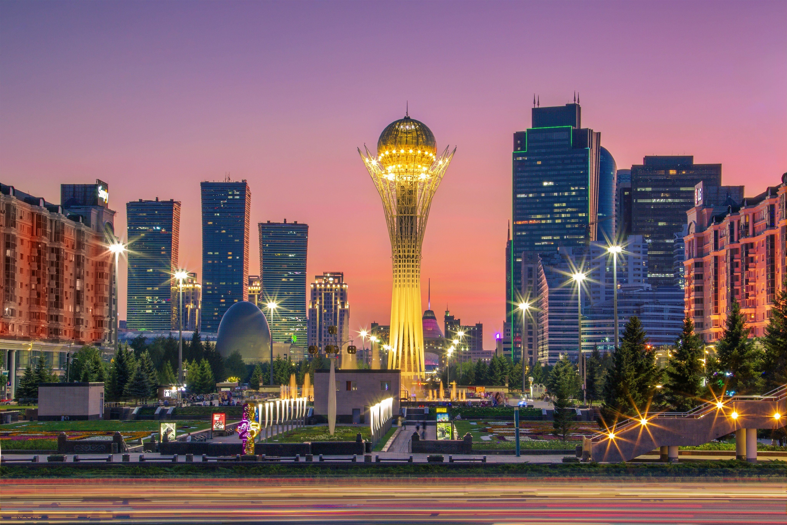

Astana

Astana - City Tour
The Astana City Tour is a professional sightseeing trip around Kazakhstan’s capital city. The tour includes a visit to the 21st century Hazrat Sultan Mosque and the Palace of Peace and Reconciliation, built to reflect the world’s major religions. Stroll through Independence Square, Nurzhol Boulevard and Round Square before visits to the iconic Bayterek Tower and Khan-Shatyr, without which no tour of Astana would be complete.